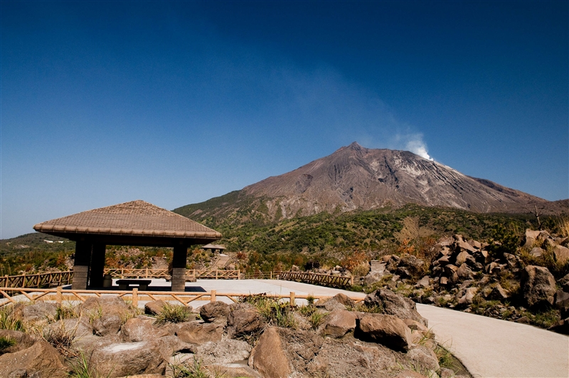
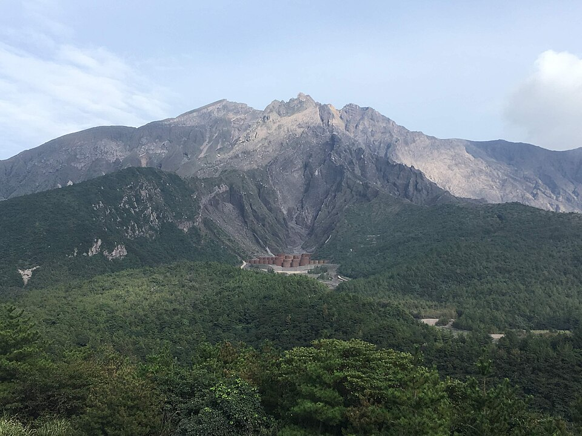
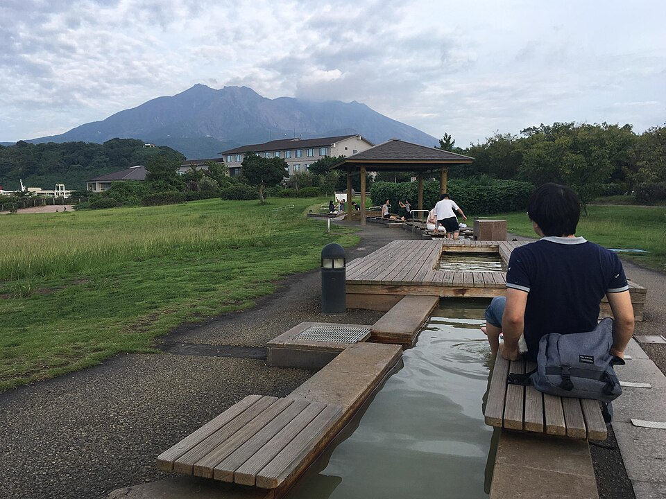
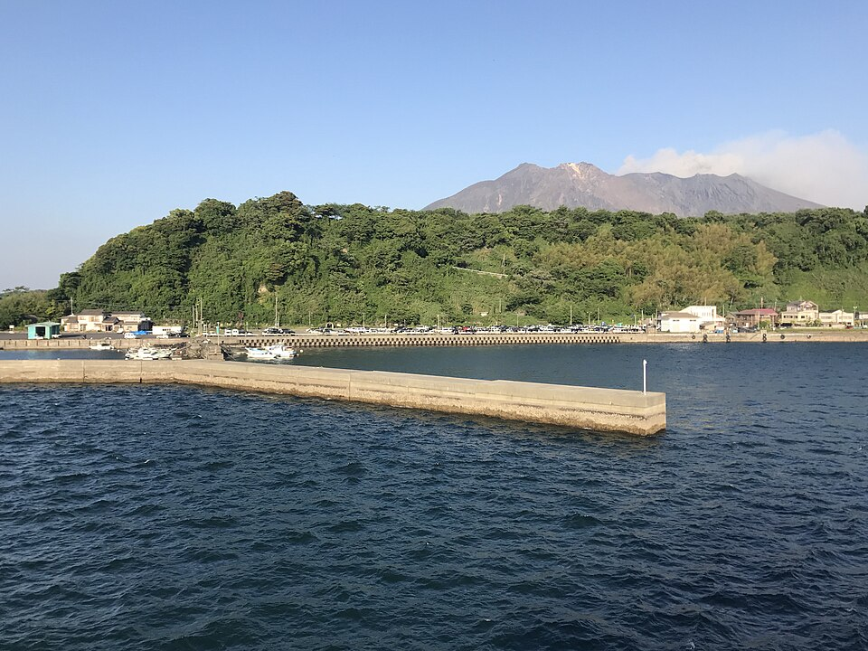
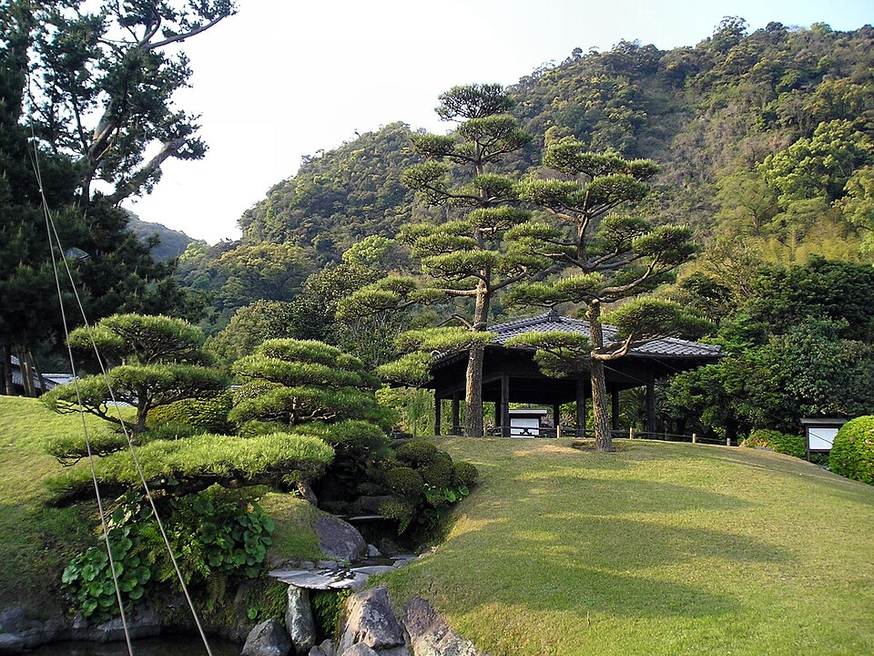
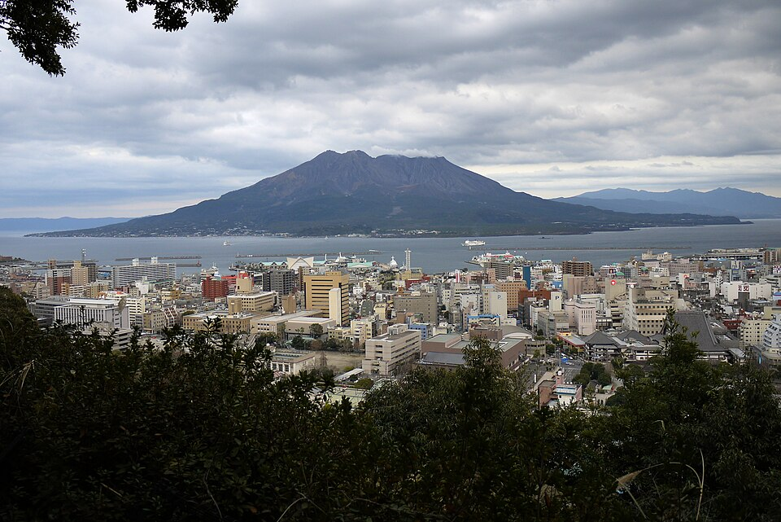
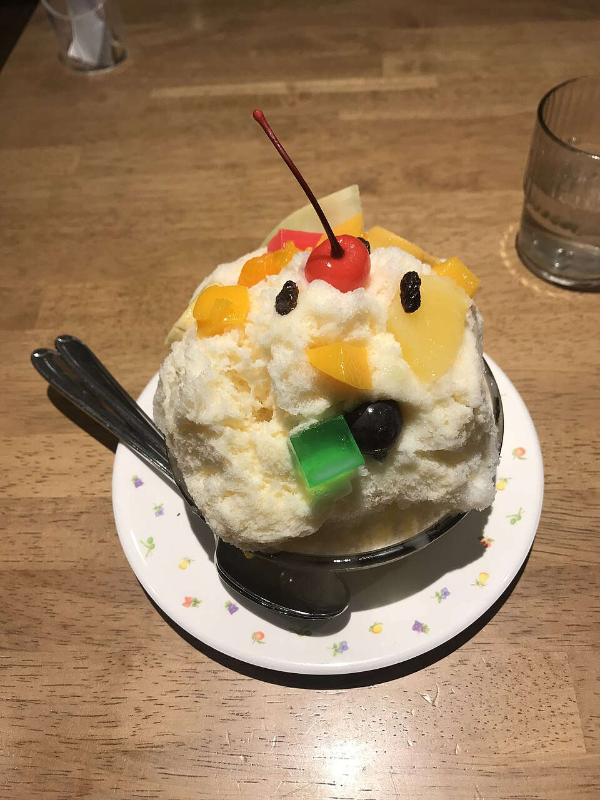

첫날은 렌트해서 기리시마 고쿠부에서 1박, 다음 날 사쿠라지마를 돌고 페리로 시내에 들어와 중앙역에서 차를 반납합니다. 나머지 3박은 중앙역 근처에 묵으며 걸어서·전차로 다닙니다. 마지막 날까지 마음 편하게 다닐 수 있도록 하루에 큰 일정은 두세 개만 넣었습니다.
가는 편 KE2179인천 T2 14:40 → 가고시마 16:20
오는 편 KE2180가고시마 17:30 → 인천 T2 19:10
인원엄마 2 · 5학년 남 2 · 2학년 여 1 · 7살 여 1
제외한 곳이부스키, 동물원, 수족관
항공 시간은 예약 기준입니다. 출발 전날 대한항공 앱에서 지연·변경 여부를 확인하세요.
일정
시간은 목표치입니다. 아이들 컨디션에 맞춰 앞뒤로 조정하세요.
날씨 예보 보는 법 · 각 날짜의 파란 줄은 tenki.jp(일본기상협회) 2주 예보 2026-10-23 10시 발표분입니다. 8~12일 뒤 예보라 자주 바뀌고, 다른 예보 사이트와 비 예보가 엇갈리는 날은 함께 적었습니다. 11월 초 가고시마는 낮 20~23℃, 아침저녁 10℃대 중반으로 예상되니 얇은 겉옷을 챙기세요. 출발 2~3일 전에 다시 확인하세요.
올해 오하라 마쓰리와 겹칩니다. 가고시마 최대 축제인 제75회 오하라 마쓰리가 덴몬칸 전차거리에서 열립니다. 11/2(월) 18:50~20:20경 밤 축제, 11/3(화·공휴일) 10:20~15:25 본 축제. 수만 명이 춤추며 행진하는 걸 공짜로 볼 수 있는 대신, 덴몬칸 일대 전차·버스가 통제되고 식당이 붐빕니다. 아래 일정은 이걸 구경거리로 넣었습니다.
10/31 토
도착 · 렌트 · 고쿠부
숙박: 기리시마 고쿠부
흐린 뒤 맑음23℃ / 18℃ · 비 30%다른 예보는 비 60~80%도 있음
12:00
인천공항 제2터미널 도착
14:40 출발 기준 2시간 40분 전. 6명 체크인·짐 부치기·보안검색에 토요일 혼잡까지 감안. 점심은 공항에서 먹고, 기내용 간식·물티슈 챙기기.
숙소에서 차로 5분 안팎(이온 하야토 쪽)에 스시로·쿠라스시가 모여 있어 아이들이 좋아합니다. 토요일 저녁이라 앱으로 대기 등록 추천. 흑돼지가 먹고 싶으면 공항 근처 '스마일'(좌식).
19:45
이온 · MEGA 돈키호테에서 아침거리 · 간식 사기
같은 상권이라 저녁 먹고 바로. 숙소 주변엔 로손·패밀리마트도 가까이 있습니다.
20:30
숙소 휴식
온천 팁 · 남자아이 둘을 남탕에 따로 보내기 어렵다면 숙소의 가족탕(貸切風呂, 전세 온천)을 확인하세요. 30~50분 단위로 빌려 가족이 함께 들어갑니다. 예약제가 많아 체크인 때 바로 예약하세요.
11/1 일
고쿠부 → 사쿠라지마 → 페리 → 차 반납
숙박: 가고시마 중앙역
흐림다른 예보도 비 10% 안팎 · 전망대 시야는 구름 상태에 따라

아리무라 용암 전망소사진: 鹿児島市 · CC BY 4.0

유노히라 전망소사진: Christophe95 · CC BY-SA 4.0

나기사 공원 족욕사진: Christophe95 · CC BY-SA 4.0

사쿠라지마 페리사진: そらみみ · CC BY-SA 4.0
10:00
체크아웃 → 긴코만 해안도로로 사쿠라지마 직행 (약 1시간 10~20분)
가는 길 후쿠야마에 흑초 항아리밭이 바다를 따라 펼쳐집니다. 화장실 겸 잠깐 들러도 좋음. 사쿠라지마는 동쪽(구로카미) 육로로 들어가 남쪽 → 서쪽(항구) 순서로 돕니다.
11:20
아리무라 용암 전망소
굳은 용암 위로 난 산책로. 남쪽에서 분화구가 가장 가깝게 보이는 곳.
12:00
유노히라 전망소
섬에서 사람이 오를 수 있는 가장 높은 곳(해발 373m). 맞은편으로 가고시마 시내가 한눈에.
12:45
점심 · 미치노에키 사쿠라지마
사쿠라지마 고미캉(작은 귤) 소프트아이스크림. 일요일 점심이라 붐비면 페리 안 우동으로 대체.
13:45
사쿠라지마 비지터센터 → 나기사 용암 산책로 · 족욕
길이 100m 무료 족욕탕. 바지만 걷으면 아이들 다 같이 들어갈 수 있어 온천 대신 딱입니다. 수건 지참.
15:00
사쿠라지마 페리 (차 실은 채로 약 15분) 아이들 하이라이트
배 안 우동가게 '야부킨'의 우동을 15분 안에 먹는 게 이 노선의 명물입니다.
15:30
주유(가득) → 가고시마 중앙역 영업소 반납
편도 반납 수수료 유무는 예약 확인서로 체크.
16:15
숙소 체크인 · 휴식 → 저녁은 중앙역 아뮤플라자 식당가
11/2 월
센간엔 · 시로야마 · 밤 축제
숙박: 가고시마 중앙역
맑고 때때로 흐림다른 예보는 비 80% · 우산 챙기기

센간엔사진: STA3816 · CC BY-SA 3.0

시로야마 전망대사진: Jody McIntyre · CC BY-SA 2.0

무자키 시로쿠마사진: そらみみ · CC BY-SA 4.0
09:00
중앙역에서 버스(시티뷰 등) → 센간엔
CUTE 2일권을 이날 개시하면 다음 날까지 버스·전차·페리 무제한.
09:30
센간엔 (9:00~17:00)
사쿠라지마를 정원 풍경으로 끌어들인 영주의 별장. 옆 쇼코슈세이칸 박물관, 사쓰마 기리코(유리공예) 공방 견학.
12:00
점심 · 센간엔 앞 '잔보모치'
꼬치 두 개 꽂은 떡. 아이들이 좋아하는 간단한 점심 겸 간식.
13:30
시로야마 전망대 (버스)
사쿠라지마 정면 뷰 사진 포인트. 산책로로 내려오면 덴몬칸까지 약 20분.
15:00
덴몬칸 '무자키' 시로쿠마 빙수 → 아케이드 쇼핑
베이비 사이즈가 있어 아이 한 명당 하나도 부담 없음.
18:50
오하라 마쓰리 밤 축제 (선택)
피곤하면 일찍 중앙역으로 복귀. 저녁은 축제 전에 먹기.
11/3 화
오하라 마쓰리 · 과학관
일본 공휴일 · 혼잡숙박: 가고시마 중앙역
흐리고 때때로 맑음비 20%다른 예보는 비 80% · 비 오면 아래 대안대로
10:00
덴몬칸 전차거리에서 본 축제 퍼레이드 관람
전차 운행이 바뀔 수 있어 중앙역에서 걸어가는 게 확실(20~25분). 자리는 일찍 잡을수록 좋습니다.
11:30
이른 점심 · 야마카타야 백화점 식당
12시 이후엔 줄이 길어집니다.
13:30
가고시마 시립 과학관 (9:30~18:00)
우주·과학 체험형 전시라 5학년부터 7살까지 고루 즐깁니다. 화요일 휴관이지만 공휴일이라 이날은 문을 엽니다(다음 날 휴관).
16:30
중앙역 아뮤플라자 옥상 관람차 '아뮤란' → 저녁
비 오면 · 오전 축제 대신 과학관에 오래 머물고, 오후는 아뮤플라자·중앙역 쇼핑으로 실내 위주로 돌리세요.
11/4 수
쇼핑 · 귀국
흐린 뒤 비비 60%실내 쇼핑 위주라 영향 적음 · 접이식 우산은 손가방에
10:00
체크아웃 → 캐리어 들고 중앙역으로 → 짐 맡기기
숙소가 가정집이라 짐을 맡길 수 없으니 역에 맡깁니다. 오전에 대형 칸이 먼저 차므로 일찍 가세요. 방법은 아래 '짐 보관' 상자 참고.
10:15
중앙역 기념품 거리 · 아뮤플라자 · 드럭스토어
11:30
점심 · 가고시마 라멘
12시 전에 들어가야 줄이 짧습니다.
13:45
짐 찾기 → 공항버스 승차장(가고시마 중앙 터미널빌딩 1층)
14:20
공항 리무진 버스 (중앙역 → 공항 약 40분)
늦어도 14:30 전후 버스. 6명이면 승차권 미리 구매, 캐리어는 버스 짐칸에.
15:00
공항 도착 → 체크인 → 공항 앞 무료 족욕 · 마지막 쇼핑
출발 2시간 30분 전 도착. 국제선 체크인 마감 시간은 예약 안내에서 확인.
17:30
KE2180 출발 → 인천 19:10 도착
짐 보관 (공항버스 승차장 기준)
공항버스 승차장: 중앙역 사쿠라지마 출구(동쪽 출구)로 나가 지하도를 건너면 길 건너편 가고시마 중앙 터미널빌딩 1층. 승차장 번호는 자료마다 달라(1번 / 동21) 현장 안내판으로 확인.
1순위 · 터미널빌딩 코인로커: 공항버스 타는 건물 안(난고쿠 교통 버스터미널)에 있어 짐 찾고 바로 탑승. 동선이 가장 짧습니다.
2순위 · 역 안 코인로커: 개찰구에서 사쿠라지마 출구 쪽으로 가는 길에 여러 곳. 출구 계단 앞 로커는 IC카드로도 결제.
대형 칸이 꽉 찼다면 · 동쪽 출구 관광안내소 짐 보관: 직원이 받아주는 유인 보관. 1개 700엔, 크기 제한 없음으로 소개돼 있습니다(기준일 불명, 영업시간 확인 필요).
요금 참고: 소형 400 · 중형 600 · 대형 700 · 특대 900엔(위치마다 다름). 기내용 캐리어 2개는 대형 1칸에 같이 들어가는 경우가 많습니다. 100엔 동전을 넉넉히.
준비물
체크하면 이 기기에만 저장됩니다. 엄마 두 분은 각자 휴대폰에서 체크하세요.
0 / 0
예상 비용
항공·숙소·렌트비 제외 · 1인 기준 · 단위 엔 · 모두 추정치
항목
계산 근거
성인
아동(초등)
아동(7살·미취학)
1인 합계
공동 비용 (차량·기타)
항목
계산 근거
엔
공동 합계
요금 기준: 사쿠라지마 페리 중학생 이상 250엔·초등 130엔, 차량 4~5m 2,350엔(운전자 1명 요금 포함이라 성인 1명분은 차량비에 들어감, 2024년 7월 개정) · 센간엔 어른 1,600엔·소인 800엔 · CUTE 2일권 어른 2,100엔·어린이 1,050엔(2026년 8월 개정) · 공항 리무진 어른 1,400~1,500엔·어린이 700~750엔. 7살은 미취학으로 보고 교통·입장을 무료로 계산했습니다("어른 1명당 미취학 1명 무료" 조건이 많음). 만 나이로 초등학생 요금이 적용되면 '아동(초등)' 칸을 보세요. 과학관 입장료는 확인하지 못해 범위로 넣었습니다.
쇼핑리스트
한국 반입 금지: 흑돼지 햄·소시지·육포·돈코츠 레토르트처럼 고기가 든 가공품은 검역에서 압수되고 과태료 대상입니다. 흑돼지는 현지에서 먹고 오세요.
맛집리스트
이름을 누르면 구글 지도에서 검색됩니다. 영업시간·정기휴일은 방문 전 지도에서 확인하세요.
닭회(鶏刺し)는 가고시마 명물이지만 생닭이라 아이들은 피하는 걸 권합니다.
주의사항
운전: 좌측통행, 우회전이 큰 회전. 깜빡이·와이퍼 레버가 반대. 국제운전면허증 + 한국 면허증 + 여권을 모두 지참해야 렌트가 됩니다.
아이 좌석: 일본 도로교통법상 만 6세 미만은 카시트(주니어시트 포함) 사용 의무입니다. 위반 시 벌금(반칙금)은 없고 운전자에게 위반점수 1점이 매겨집니다. 7살 아이가 만 6세 미만이면 의무 대상이고, 만 6세 이상이거나 2학년이어도 JAF는 키 150cm 미만까지 주니어시트를 권장합니다. 렌트 예약에 2개 넣었는지 확인. (가고시마현경 안내 2025-02-28 기준, 정확한 적용은 렌터카 회사에 확인 권장)
사쿠라지마 화산: 분화 경계 레벨과 바람 방향(화산재)을 출발 전날 일본 기상청 사이트에서 확인. 재가 날리면 마스크·모자·선글라스.
11/3 공휴일 + 축제: 덴몬칸 전차·버스 통제, 식당 줄. 점심은 11시대에.
미아 대비: 아이들 휴대폰이나 손목에 엄마 두 분 번호와 숙소 이름(일본어)을 적어 두세요. 집합 장소를 매번 정하기.
엄마 한 분만 보호자인 아이: 일본 입국엔 보통 필요 없지만, 만일을 대비해 영문 가족관계증명서를 챙기면 안심.